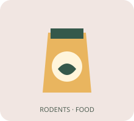
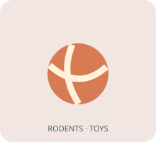
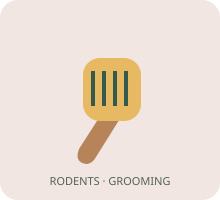
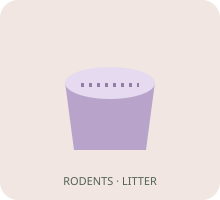
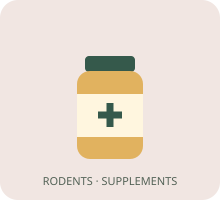
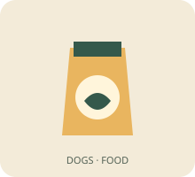

In stockRodents / Food / Treats
Meadow herb nibbles
- ID
- A-026
- Pack size
- 100 g
- In stock
- Yes
Complementary herb treats for guinea pigs. Offer small portions alongside a balanced diet.
€4.20100 g
Good food, favourite toys and everyday essentials for the companions who make a house a home.
Find their favourites ↓Showing 26–50 of 100 products
No products match. Try a different search or reset the filters.

In stockRodents / Food / Treats
Complementary herb treats for guinea pigs. Offer small portions alongside a balanced diet.
Rodents / Food / Dry
Dust-extracted timothy hay for guinea pigs and chinchillas. Keep fresh hay available.

In stockRodents / Toys
Untreated willow tunnel for guinea pigs. Supervise use and replace when worn.
Rodents / Toys
Solid running surface for Syrian hamsters. Choose a size that keeps the back straight.
Rodents / Cages & Transport
Ventilated hamster enclosure with a deep bedding base. Add suitable enrichment and check species-specific space needs.
Rodents / Cages & Transport
Ventilated carrier for short journeys with hamsters or small rodents. Check fit before travel.

In stockRodents / Grooming
Soft bristles for gentle grooming of guinea pigs.

In stockRodents / Litter
Unscented paper bedding suitable for hamsters and guinea pigs. Keep the enclosure clean and dry.
Rodents / Litter
Bathing sand formulated for chinchillas. Follow species-specific bathing guidance.

In stockRodents / Supplements
Complementary vitamin C supplement formulated for guinea pigs. Ask your vet about individual needs.

In stockDogs / Food / Dry
Complete dry food for adult dogs with whitefish and potato.
Dogs / Food / Dry
Complete dry puppy food with small pieces. Follow age-specific feeding directions.
Dogs / Food / Dry
Complete dry food formulated for senior dogs with turkey and rice.
Dogs / Food / Wet
Complete wet food for adult dogs with turkey and vegetables.
Dogs / Food / Wet
Complete lamb wet food for adult dogs in individual trays.
Dogs / Food / Wet
Complete wet food formulated for puppies. Follow the pack feeding guide.
Dogs / Food / Treats
Complementary sweet potato treats for adult dogs. Supervise chewing.
Dogs / Food / Treats
Complementary baked dog biscuits with peanuts. Offer in moderation.
Dogs / Food / Treats
Complementary dental chews for adult small dogs. Select the correct size.
Dogs / Toys
Sliding compartments hide treats for supervised enrichment games.
Dogs / Toys
Lightweight floating ring for supervised fetch games around water.
Dogs / Toys
Soft crinkle toy for gentle supervised play. Remove if torn.
Dogs / Cages & Transport
Folding wire crate with a removable tray for small dogs. Check internal space before use.
Dogs / Cages & Transport
Rigid ventilated travel kennel for larger dogs. Check fit and transport requirements.
Dogs / Cages & Transport
Wheeled ventilated carrier for small dogs up to 7 kg. Use on smooth surfaces.
Rodent food and care are species-specific: read each description. Wet food and flea/tick products are intentionally omitted for rodents; consult an exotic-pet vet about parasite care. Dogs use training pads in the litter category. All products and prices are fictional samples; illustrations are placeholders. Treatment and supplement listings are examples, not recommendations.